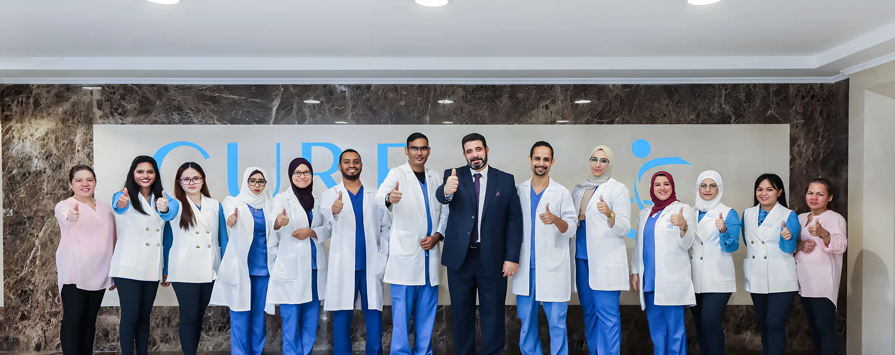
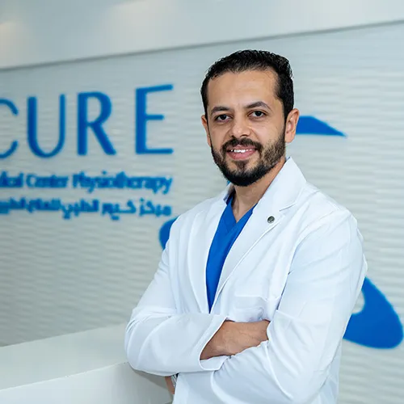
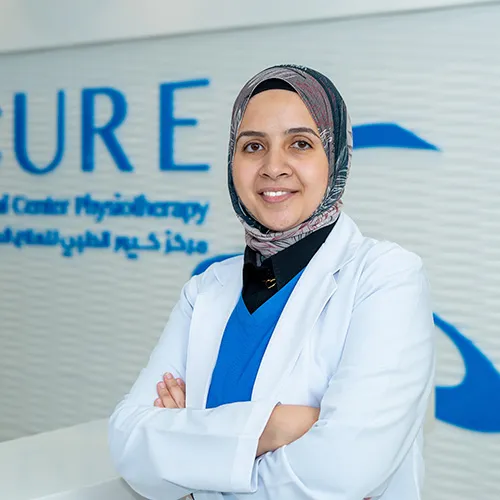
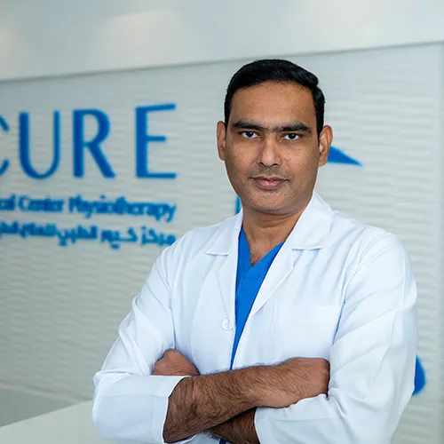

Reception
Bring your Emirates ID, your insurance card and your referral if you have one. You fill in a short registration form. The average wait is about 15 minutes.

Cure Medical Center Physiotherapy is on the 2nd floor of ASAS Tower, Al Khan Corniche Street. Every patient starts with an assessment, then gets a treatment plan made for them.
Start with where it hurts. Open a line to see what we use for it and which of our physiotherapists see it most.
Disc herniation, pinched nerves, sciatica, cervical and lumbar pain, scoliosis.
What we use: traction therapy, MLS robotic laser, functional magnetic stimulation (Tesla 2.5), manual therapy.
Seen most by: Mohamed Hamed, Karima Mostafa, Taif Ayman, Mohamed Gamal.
Frozen shoulder, impingement, rotator cuff injuries, calcified shoulder tendons.
What we use: shockwave, and the Kinetec Centura shoulder CPM after rotator cuff repair or a shoulder replacement.
Seen most by: Mahmoud Mosbah, Mohamed Hamed, Karima Mostafa.
Knee and hip replacement, ACL and meniscus repair, jumper's knee, runner's knee, osteoarthritis.
What we use: the Kinetec Spectra Kompanion knee CPM, shockwave, the HOMING movement and balance system.
Seen most by: Mohamed Gamal, Mahmoud Mosbah, Naina Choudhary.
Plantar fasciitis, heel spurs, Achilles tendinitis, sprained ankles.
What we use: shockwave and laser needling.
Seen most by: Taif Ayman, Karima Mostafa, Mohamed Gamal.
Tennis elbow, golfer's elbow, carpal tunnel syndrome.
What we use: shockwave, laser needling, cryoultrasound.
Getting movement back after knee, hip, shoulder or ankle surgery, ligament reconstruction or a fracture.
What we use: CPM machines, cryoultrasound, the HOMING system and the rehab gym.
Stroke, hemiplegia, Bell's palsy, spinal cord injury, peripheral nerve problems, balance and walking.
What we use: functional magnetic stimulation, the HOMING system, CPM.
Seen most by: Karima Mostafa, Naina Choudhary, Taif Ayman.
Muscle strains, ligament sprains, overuse injuries, shin splints.
What we use: cryoultrasound, shockwave, laser needling.
Seen most by: Mahmoud Mosbah (FIFA Diploma in Sports Medicine).
Arthritis, osteoporosis, Parkinson's, balance and the risk of falling.
What we use: geriatric rehabilitation, and a fall-risk check on the HOMING system.
Paediatric rehabilitation for neuromuscular and musculoskeletal conditions, including cerebral palsy, clubfoot and low muscle tone.
Seen most by: Naina Choudhary.
Bring your Emirates ID, your insurance card and your referral if you have one. You fill in a short registration form. The average wait is about 15 minutes.

Your physiotherapist asks about your history, your daily routine and what makes the pain better or worse. Then they check your posture, strength, flexibility and how you move.

We tell you what we found and why, in plain words. Ask questions at any point. Understanding your problem is part of getting better.
A treatment plan built from your assessment: hands-on therapy, the machines that suit your case, and exercises in the rehab gym.
MLS Robotic LaserLaser NeedleShockwaveTesla 2.5 Magnetic StimulationKinetec CenturaKinetec Spectra KompanionCryoultrasoundHOMINGBTL HandsFree SonoSonopulsTractionCompression therapy
The machines in our treatment rooms. What each one does
Six of the nine hold extra certificates in manual therapy.

10 years · Cairo University · Orthopaedic Manual Therapy (OMTA)

9+ years · Manual spinal and orthopaedic manual rehabilitation

7+ years · FIFA Diploma in Sports Medicine · Orthopaedic Manual Therapist (UK)

6 years · Certified Manual Therapy Practitioner

5 years · Master of Physical Therapy · Clinical taping

4+ years · Orthopaedic Manual Therapy · Manual spinal rehabilitation

Physiotherapist

Physiotherapist
Physiotherapist
Bring your insurance card and Emirates ID. If your plan needs a referral, your insurer can email it to us before your visit.
No insurance? Pay by cash or card. We give you the receipt and an English medical report so you can claim it back.
4.9/5
“Had a great experience with Dr. Mohamed Hamed. He was professional and clear, and really understanding with chronic neck and upper back pain.”
“Excellent service with proper machinery & professional qualified physiotherapists. Dr. Syed has treated really well in each and every session. Clean environment.”
“The clinic is very clean and well organized, the reception staff are welcoming and efficient, and the management is professional and attentive.”
ASAS Tower, Office Entrance, 2nd floor, Office 202, Al Khan Corniche Street, Sharjah
Opposite Al Bareej. P.O. Box 22370.
Parking: free parking in front of and around the building. Private parking at the back; get the ticket at reception.
Access: ramps at the entrance for easier access.
| Saturday | 9am – 9pm |
| Sunday | 9am – 9pm |
| Monday | 9am – 9pm |
| Tuesday | 9am – 9pm |
| Wednesday | 9am – 9pm |
| Thursday | 9am – 9pm |
| Friday | Closed |